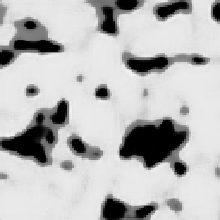
| 모델의 출력 ŷ | L1 기대 손실 | L2 기대 손실 |
|---|---|---|
| 0.0 (solid 확신) | 0.50 | 0.50 |
| 0.5 (회색) | 0.50 | 0.25 ← 최소 |
| 1.0 (pore 확신) | 0.50 | 0.50 |
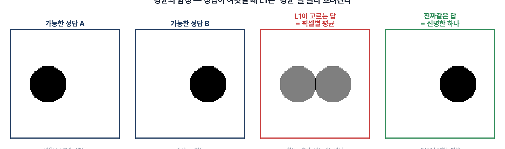
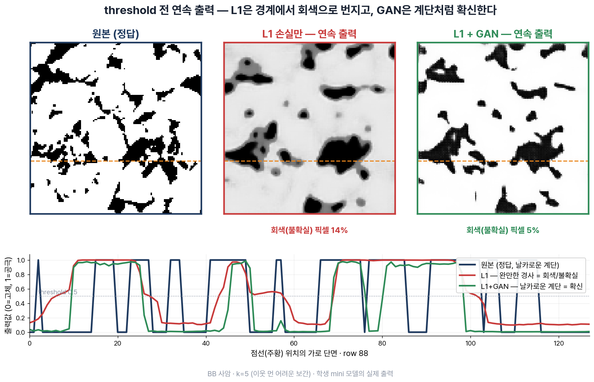
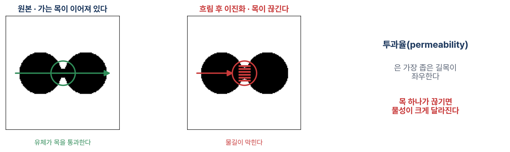
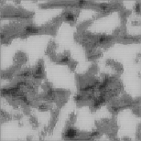
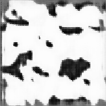
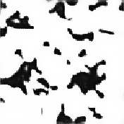
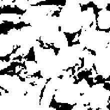
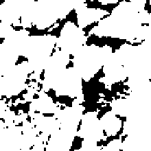
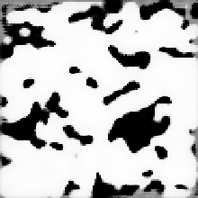
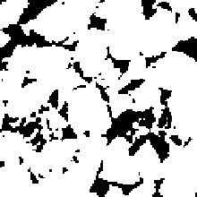
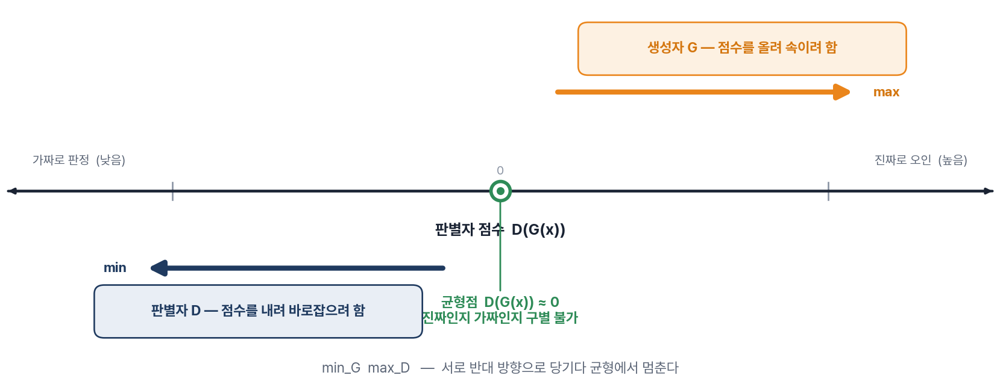
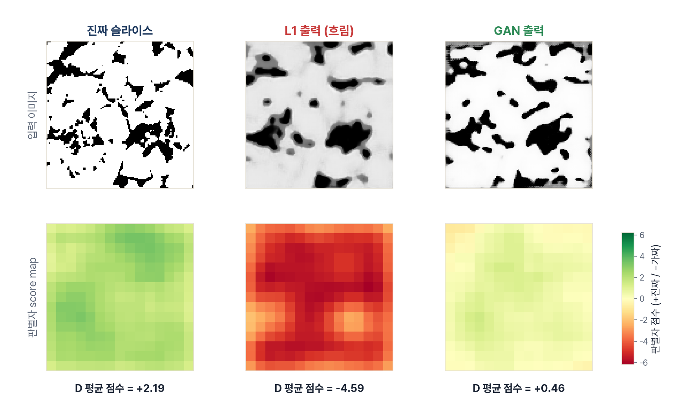
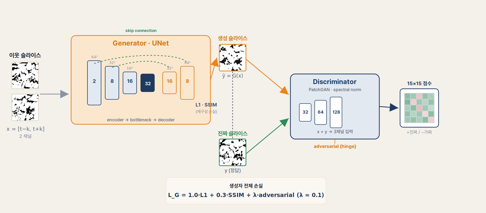
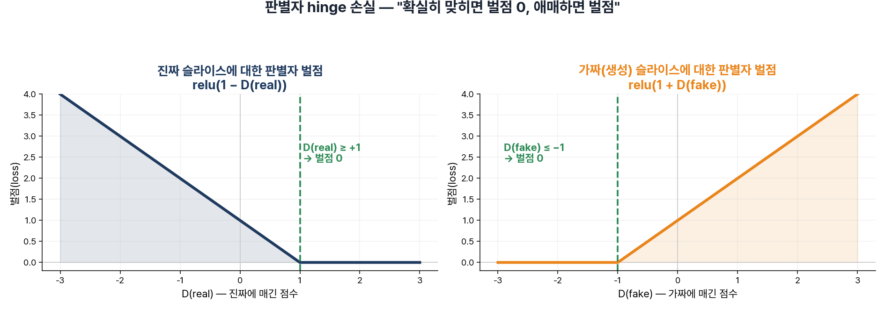
| 상황 | D의 점수 | D의 벌점 | 계산 |
|---|---|---|---|
| 진짜에 확신 | D(y) = +1.5 | 0 | max(0, 1−1.5) = 0 |
| 진짜에 미온적 | D(y) = +0.8 | 0.2 | max(0, 1−0.8) = 0.2 |
| 가짜를 확실히 판별 | D(G(x)) = −1.5 | 0 | max(0, 1+(−1.5)) = 0 |
| 가짜에 속음 | D(G(x)) = +0.3 | 1.3 | max(0, 1+0.3) = 1.3 |
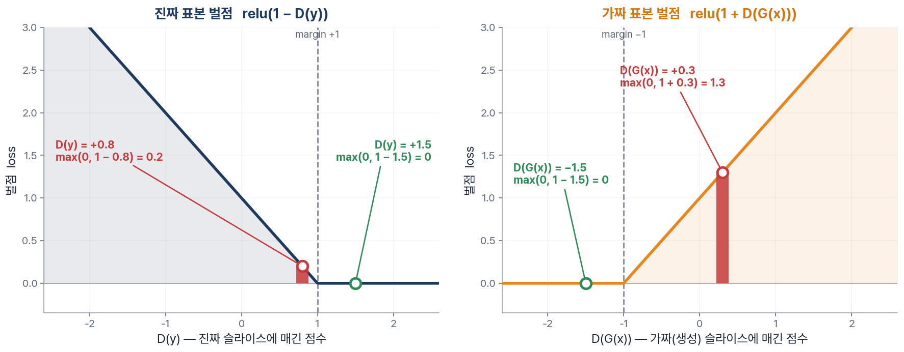
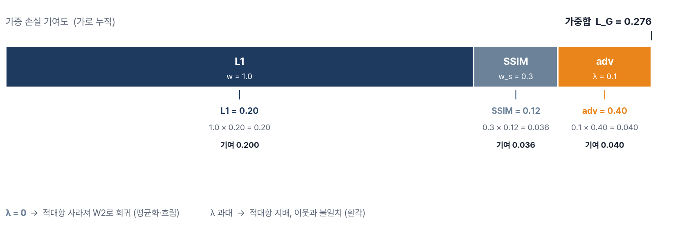
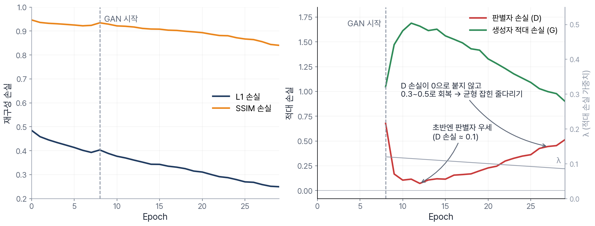
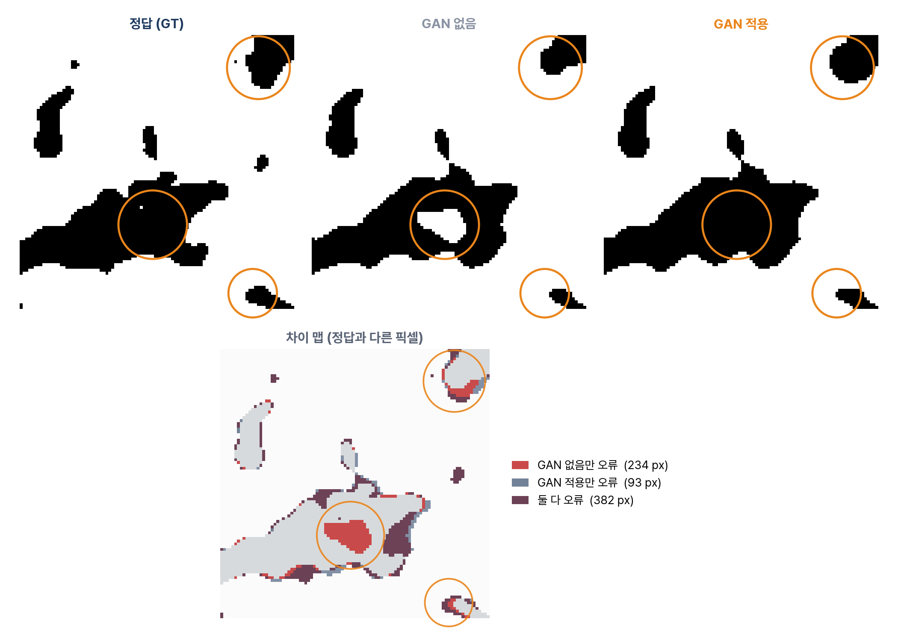
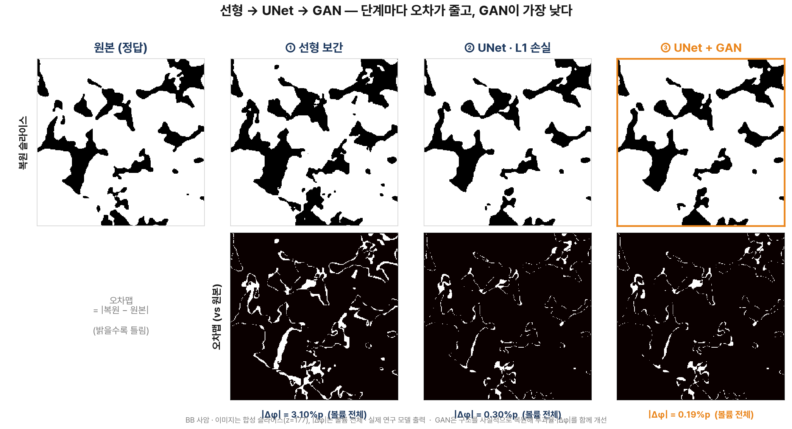
| 방법 | 볼륨 |Δφ| |
|---|---|
| 선형 보간 (k=3) | 3.10 %p |
| UNet · L1 | 0.30 %p |
| UNet + GAN | 0.19 %p |
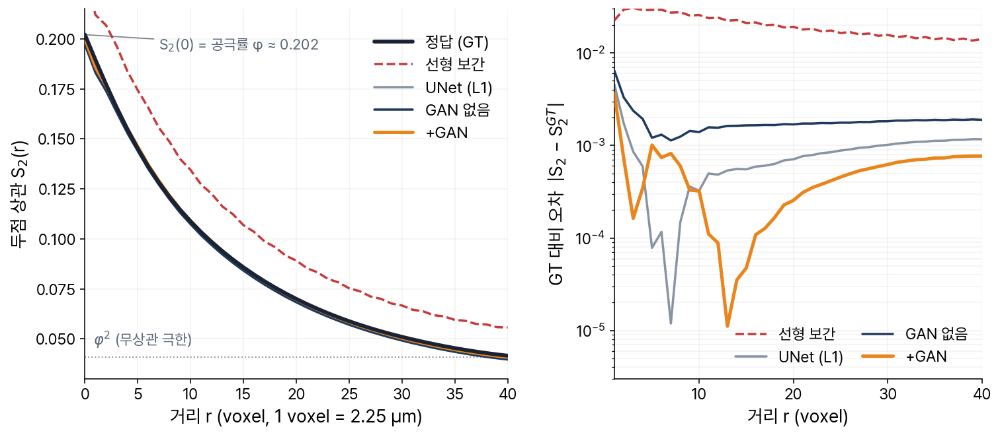
| 방법 | GT와의 평균 편차 |
|---|---|
| 선형 보간 | 2.0 × 10⁻² |
| UNet · L1 | 8.7 × 10⁻⁴ |
| UNet + GAN | 5.5 × 10⁻⁴ |
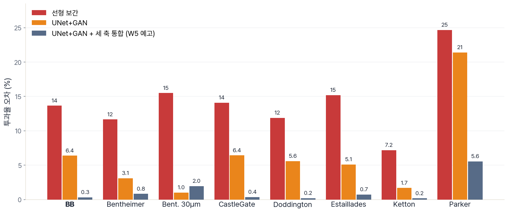